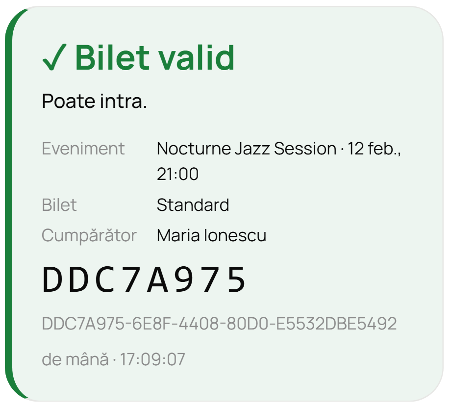
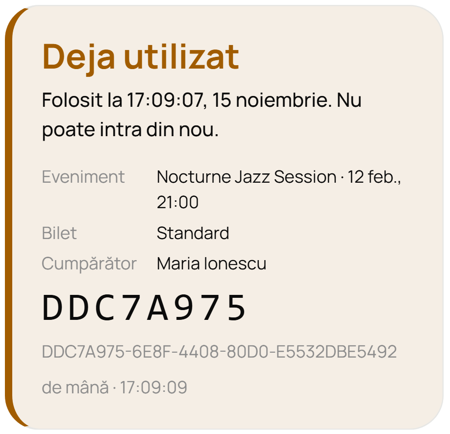

Vânzare de bilete cu plată online (Stripe), cod QR pe email și validare la intrare, de pe telefon.
Problema
Aceeași poză a biletului, trimisă la cinci prieteni.
Doi clienți cumpără ultimul loc în aceeași secundă.
Site-ul crede browserul că plata a reușit.
Organizatorul nu știe câte bilete a vândut și cine a intrat.
Soluția, într-o frază
Arhitectura
Modelul de date
CHECK Sold ≤ Capacity
nu se vinde peste capacitate
UNIQUE Ticket.Token
un singur bilet pe cod QR
Pending → Paid → Refunded
fiecare pas: un UPDATE cu condiție
Cumpărare și plată
1
locurile scad atomic, 15 minute
2
cardul nu trece prin serverul nostru
3
semnătură, sumă, monedă verificate
4
QR unic; emailul din fundal
Webhook pierdut? Procesul de fundal întreabă Stripe înainte să anuleze o rezervare.
Problema grea 1 · stocul
5 / 30
reușesc în testul de cursă
Verificarea și scăderea sunt o singură comandă: baza de date le execută pe rând. 0 rânduri = „s-au epuizat”.
Problema grea 2 · plata
Al doilea mesaj găsește comanda deja Paid: niciun bilet în plus.
Cheie de idempotență la Stripe: banii pleacă o singură dată.
Problema grea 3 · intrarea


UPDATE … WHERE NOT "IsUsed" AND "VoidedAt" IS NULL : unul intră, celălalt vede „Deja utilizat”. Rambursare și scanare simultane: niciodată amândouă.
Securitate
Cardul — doar pe pagina Stripe
Plata — doar prin webhook semnat
Biletul — GUID aleator, 122 de biți
Parola — hash PBKDF2 cu sare
Accesul — JWT + roluri; 404 la altcineva
Secretele — User Secrets, nu în git
Un test „gardă” pică dacă un endpoint nou care modifică date uită de [Authorize].
Testare · cifre măsurate
300
backend, xUnit
186
frontend, Vitest
79,4%
linii acoperite (backend)
39/40
rulări CI reușite
Reguli critice etichetate: 36 bilet unic · 21 stoc · 34 emitere din webhook. Teste de cursă pe o bază SQLite reală.
Cum am lucrat
24
issue-uri
3
milestone-uri
20
Pull Request-uri
43
commit-uri pe main
Demonstrație live
Limitări, spuse cinstit
Concluzii
Un UPDATE cu condiție bate zece if-uri.
Prețul, plata și biletul le decide serverul.
Fiecare eșec are un comportament gândit și un test.
Doar pe o bază de date reală.
Mulțumesc
github.com/NicuMijache/EventPass · raportul final: docs/raport-final.pdf